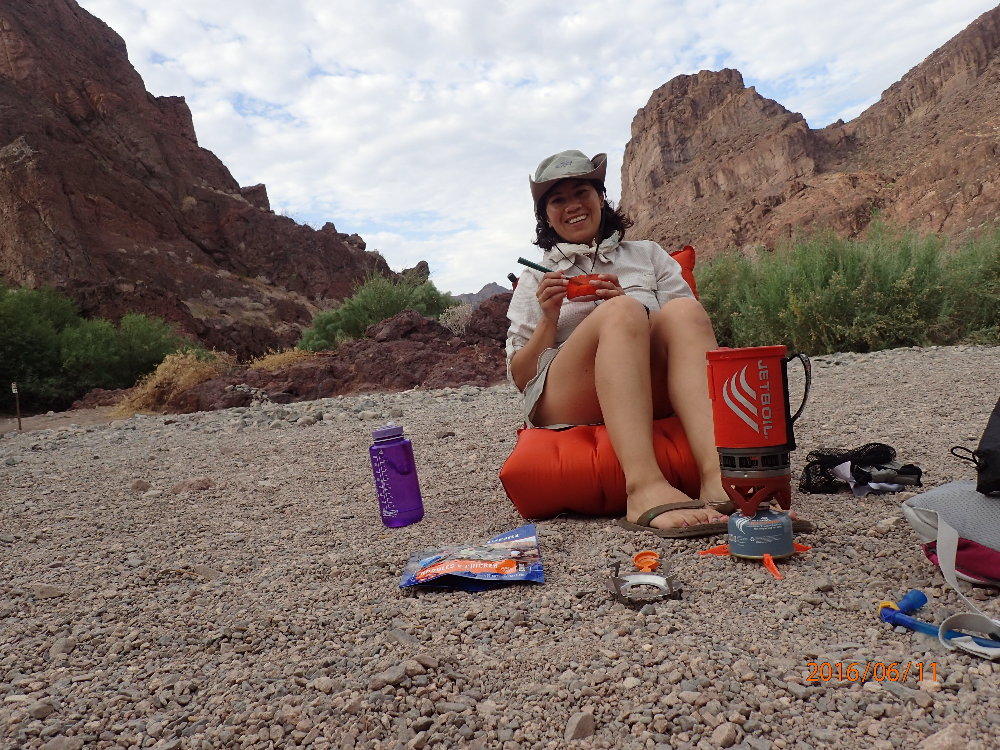

My Days Are Numbered
"...Teach us to number our days, that we may apply our hearts unto wisdom." Psalm 90:12 The Bible says that 'our lives are but a vapor;... as a man comes forth from birth, like a flower he withers.' How true is that in my own life. As I reflect on my youth, it is not my adventures that thrilled me nor the near death experiences that haunted me but how quickly my days have slipped through my fingers as water. The vitality of the human body is a paradox. From conception, our cells have a set time such that each breath is closer to our last. Aside from the various obstacles God has placed before our eyes to reveal Himself to us, the greatest and single most important of them - is the frailty of life. The revelation of our finality is also the age of accountability that is required of all humans - to know that there is a God; and we, are not Him.
Called Out of Darkness into His Marvelous Light.
Never in my wildest dreams would I have ever thought, nor cared to think, that there was a God who cared about the affairs of men. It was preposterous to even accept such a notion that something existed and co-inhabited every human sphere. How could such an entity exist and to what extent, if true, could it impose its will on us? How could such an entity empathize with mere mortals if it was 'god?' An entity without breadth and width that just existed? And if this entity did exist, how could it have any human characteristics as emotions, grief, suffering, etc? If there was a 'god,' it would be impossible for it to have these types of characteristics because it needed to be higher than the evolution of a human perspective. So I reasoned, that it could not be true. If such a thing did exist, it had to be a stoic entity. After all, there was all this suffering and evil in the world - would a 'god' care? By the 5th grade, I couldn't believe in a 'god' that allowed wickedness to prosper. I found peace in reasoning that death was an utopic ending. At times, I longed for it to come and planned on ways of making it come true. The internal struggles, the striving, the sadness and grief that plagued me - what a release to be free of those burdens and cease to exist!
But God had already ordained my footsteps before eternity past. He raised me up when darkness engulfed me. He lifted me upon angels wings when my foot was about to slip. He knew my heart and cradled me in His bosom as a father to his children. Never was I far from His eyes. His ways were greater than my ways and His mercies were never ending to this degenerate.
Previous outdoor adventures:
Camping Hiking Backpacking Hang Gliding Outrigging  Sailing Canyoneering White Water Rafting Cross-country skiing Mountaineering
Although I am social, I prefer to be alone. I have done some very stupid and embarrassing things in my past, that I am sure have been captured on devices; however, I am not haunted by them because my eternity is based on the forgiveness and redemptive power of Jesus Christ.
I don't like chocolate, but I eat chocolate. It's an enigma.¯\_(ツ)_/¯